<!DOCTYPE html>
<html>
<head><meta name="generator" content="Hexo 3.8.0">
  <meta charset="utf-8">
  
  <title>常用的移动信息架构设计模式 | guowj</title>
  <meta name="viewport" content="width=device-width, initial-scale=1, maximum-scale=1">
  
  <meta name="keywords" content="产品交互设计移动端信息架构">
  
  
  
  
  <meta name="description" content="&amp;nbsp;&amp;nbsp;&amp;nbsp;&amp;nbsp;&amp;nbsp;&amp;nbsp;信息架构是一种对信息进行组织分类的方法，提升信息的可用性和可寻性，使其能更加高效有序地被用户认知。对于用户来说，能帮助他们便捷的找到功能，降低使用门槛。对于产品经理来说，能帮助他们完善产品蓝图，进行产品功能、模块划分，为下一步具体产品设计做准备。用两个字来总结，就是分类。这篇文章主要是记录下常用的移动端信息架构设计模式。">
<meta name="keywords" content="产品,交互设计,移动端,信息架构">
<meta property="og:type" content="article">
<meta property="og:title" content="常用的移动信息架构设计模式">
<meta property="og:url" content="https://gwjacqueline.github.io/常用的移动信息架构设计模式/index.html">
<meta property="og:site_name" content="guowj">
<meta property="og:description" content="&amp;nbsp;&amp;nbsp;&amp;nbsp;&amp;nbsp;&amp;nbsp;&amp;nbsp;信息架构是一种对信息进行组织分类的方法，提升信息的可用性和可寻性，使其能更加高效有序地被用户认知。对于用户来说，能帮助他们便捷的找到功能，降低使用门槛。对于产品经理来说，能帮助他们完善产品蓝图，进行产品功能、模块划分，为下一步具体产品设计做准备。用两个字来总结，就是分类。这篇文章主要是记录下常用的移动端信息架构设计模式。">
<meta property="og:locale" content="zh-CN">
<meta property="og:image" content="https://gwjacqueline.github.io/images/pm/cjs.png">
<meta property="og:image" content="https://gwjacqueline.github.io/images/pm/txxw.png">
<meta property="og:image" content="https://gwjacqueline.github.io/images/pm/jzhff.png">
<meta property="og:image" content="https://gwjacqueline.github.io/images/pm/jzhff2.png">
<meta property="og:image" content="https://gwjacqueline.github.io/images/pm/cdfz.png">
<meta property="og:image" content="https://gwjacqueline.github.io/images/pm/cdfz2.png">
<meta property="og:image" content="https://gwjacqueline.github.io/images/pm/yqst.png">
<meta property="og:image" content="https://gwjacqueline.github.io/images/pm/yqst2.png">
<meta property="og:image" content="https://gwjacqueline.github.io/images/pm/bdh.png">
<meta property="og:image" content="https://gwjacqueline.github.io/images/pm/bdh2.png">
<meta property="og:image" content="https://gwjacqueline.github.io/images/pm/glst.png">
<meta property="og:image" content="https://gwjacqueline.github.io/images/pm/glst2.png">
<meta property="og:updated_time" content="2019-07-16T13:01:23.749Z">
<meta name="twitter:card" content="summary">
<meta name="twitter:title" content="常用的移动信息架构设计模式">
<meta name="twitter:description" content="&amp;nbsp;&amp;nbsp;&amp;nbsp;&amp;nbsp;&amp;nbsp;&amp;nbsp;信息架构是一种对信息进行组织分类的方法，提升信息的可用性和可寻性，使其能更加高效有序地被用户认知。对于用户来说，能帮助他们便捷的找到功能，降低使用门槛。对于产品经理来说，能帮助他们完善产品蓝图，进行产品功能、模块划分，为下一步具体产品设计做准备。用两个字来总结，就是分类。这篇文章主要是记录下常用的移动端信息架构设计模式。">
<meta name="twitter:image" content="https://gwjacqueline.github.io/images/pm/cjs.png">
  
    <link rel="alternate" href="/atom.xml" title="guowj" type="application/atom+xml">
  

  

  <link rel="icon" href="/css/images/mylogo.png">
  <link rel="apple-touch-icon" href="/css/images/mylogo.png">
  
    <link href="//fonts.googleapis.com/css?family=Source+Code+Pro" rel="stylesheet" type="text/css">
  
  <link href="https://fonts.googleapis.com/css?family=Open+Sans|Montserrat:700" rel="stylesheet" type="text/css">
  <link href="https://fonts.googleapis.com/css?family=Roboto:400,300,300italic,400italic" rel="stylesheet" type="text/css">
  <link href="//netdna.bootstrapcdn.com/font-awesome/4.0.3/css/font-awesome.css" rel="stylesheet">
  <style type="text/css">
    @font-face{font-family:futura-pt; src:url("../css/fonts/FuturaPTBold.otf") format("woff");font-weight:500;font-style:normal;}
    @font-face{font-family:futura-pt-light; src:url("../css/fonts/FuturaPTBook.otf") format("woff");font-weight:lighter;font-style:normal;}
    @font-face{font-family:futura-pt-italic; src:url("../css/fonts/FuturaPTBookOblique.otf") format("woff");font-weight:400;font-style:italic;}
}

  </style>
  <link rel="stylesheet" href="/css/style.css">

  <script src="/js/jquery-3.1.1.min.js"></script>
  <script src="/js/bootstrap.js"></script>

  <!-- Bootstrap core CSS -->
  <link rel="stylesheet" href="/css/bootstrap.css">

  
    <link rel="stylesheet" href="/css/dialog.css">
  

  

  
    <link rel="stylesheet" href="/css/header-post.css">
  

  
  
  
    <link rel="stylesheet" href="/css/vdonate.css">
  

</head>
</html>


  <body data-spy="scroll" data-target="#toc" data-offset="50">


  
  <div id="container">
    <div id="wrap">
      
        <header>

    <div id="allheader" class="navbar navbar-default navbar-static-top" role="navigation">
        <div class="navbar-inner">
          
          <div class="container"> 
            <button type="button" class="navbar-toggle" data-toggle="collapse" data-target=".navbar-collapse">
              <span class="sr-only">Toggle navigation</span>
              <span class="icon-bar"></span>
              <span class="icon-bar"></span>
              <span class="icon-bar"></span>
            </button>

            
              <a class="brand" style="
                 margin-top: 0px;" href="#" data-toggle="modal" data-target="#myModal">
                  
              </a>
            
            
            <div class="navbar-collapse collapse">
              <ul class="hnav navbar-nav">
                
                  <li> <a class="main-nav-link" href="/">首页</a> </li>
                
                  <li> <a class="main-nav-link" href="/archives">归档</a> </li>
                
                  <li> <a class="main-nav-link" href="/categories">分类</a> </li>
                
                  <li> <a class="main-nav-link" href="/tags">标签</a> </li>
                
                  <li><div id="search-form-wrap">

    <form class="search-form">
        <input type="text" class="ins-search-input search-form-input" placeholder>
        <button type="submit" class="search-form-submit"></button>
    </form>
    <div class="ins-search">
    <div class="ins-search-mask"></div>
    <div class="ins-search-container">
        <div class="ins-input-wrapper">
            <input type="text" class="ins-search-input" placeholder="请输入关键词...">
            <span class="ins-close ins-selectable"><i class="fa fa-times-circle"></i></span>
        </div>
        <div class="ins-section-wrapper">
            <div class="ins-section-container"></div>
        </div>
    </div>
</div>
<script>
(function (window) {
    var INSIGHT_CONFIG = {
        TRANSLATION: {
            POSTS: '文章',
            PAGES: '页面',
            CATEGORIES: '分类',
            TAGS: '标签',
            UNTITLED: '(无标题)',
        },
        ROOT_URL: '/',
        CONTENT_URL: '/content.json',
    };
    window.INSIGHT_CONFIG = INSIGHT_CONFIG;
})(window);
</script>
<script src="/js/insight.js"></script>

</div></li>
            </ul></div>
          </div>
                
      </div>
    </div>

</header>


      
            
      <div id="content" class="outer">
        
          <section id="main" style="float:none;"><article id="post-常用的移动信息架构设计模式" style="width: 75%; float:left;" class="article article-type-post" itemscope itemprop="blogPost">
  <div id="articleInner" class="article-inner">
    
    
      <header class="article-header">
        
  
    <h1 class="thumb" itemprop="name">
      常用的移动信息架构设计模式
    </h1>
  

      </header>
    
    <div class="article-meta">
      
	<a href="/常用的移动信息架构设计模式/" class="article-date">
	  <time datetime="2019-07-16T08:18:56.000Z" itemprop="datePublished">2019-07-16</time>
	</a>

      
    <a class="article-category-link" href="/categories/产品/">产品</a>

      
	<a class="article-views">
	<span id="busuanzi_container_page_pv">
		阅读量<span id="busuanzi_value_page_pv"></span>
	</span>
	</a>

      

    </div>
    <div class="article-entry" itemprop="articleBody">
      
        <blockquote>
<p>&nbsp;&nbsp;&nbsp;&nbsp;&nbsp;&nbsp;信息架构是一种对信息进行组织分类的方法，提升信息的可用性和可寻性，使其能更加高效有序地被用户认知。对于用户来说，能帮助他们便捷的找到功能，降低使用门槛。对于产品经理来说，能帮助他们完善产品蓝图，进行产品功能、模块划分，为下一步具体产品设计做准备。用两个字来总结，就是<strong>分类</strong>。这篇文章主要是记录下常用的移动端信息架构设计模式。</p>
</blockquote>
<a id="more"></a>
<h2 id="层级结构（Hierarchy）"><a href="#层级结构（Hierarchy）" class="headerlink" title="层级结构（Hierarchy）"></a>层级结构（Hierarchy）</h2><ul>
<li><strong>层级架构</strong>是一种标准的网站架构，有一个主页和一系列子页面。</li>
</ul>
<div align="center"><br>  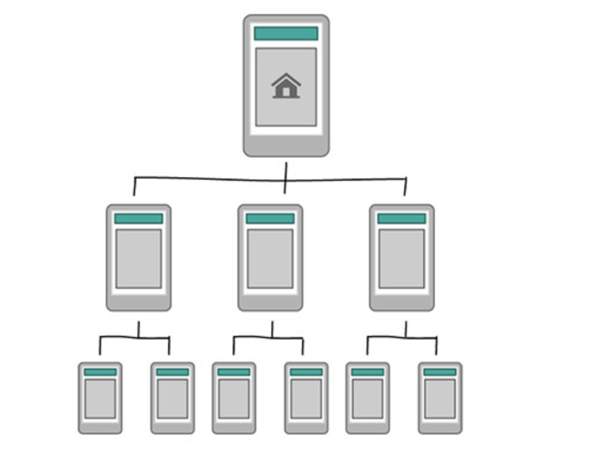<br></div>

<ul>
<li>常见例子：新闻网</li>
</ul>
<div align="center"><br>  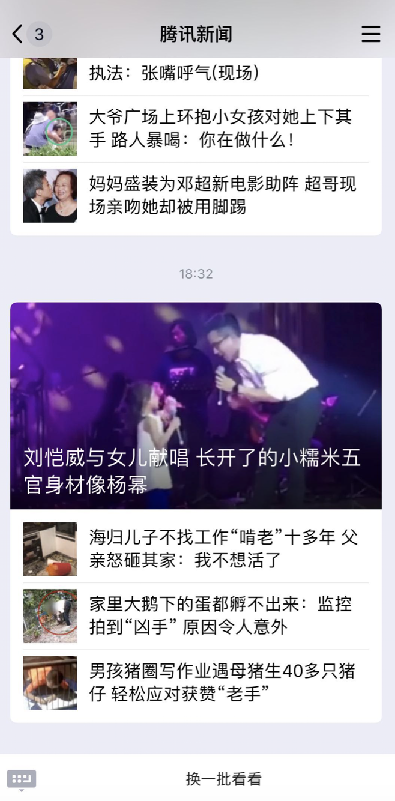<br></div>

<ul>
<li><p>适合：对于需要依据桌面网站架构进行设计而言，能够很好的组织复杂的网站结构。</p>
</li>
<li><p>注意：导航，当用户使用小屏幕时，多层导航架构会引起问题</p>
</li>
</ul>
<h2 id="集中和分发-辐射式（Hub-amp-spoke）"><a href="#集中和分发-辐射式（Hub-amp-spoke）" class="headerlink" title="集中和分发/辐射式（Hub&amp;spoke）"></a>集中和分发/辐射式（Hub&amp;spoke）</h2><ul>
<li><strong>集中和分发</strong>模式会在导航时给予你一个中心索引。这是苹果 iPhone 的默认导航模式。用户不能在不同子栏目中进行跳转，必须回到索引页面。这种模式在工作流程受限的桌面软件上使用很久了，但是，由于用户在移动场景上会关注于一个任务，这种设计正变得更加普及，</li>
</ul>
<div align="center"><br>  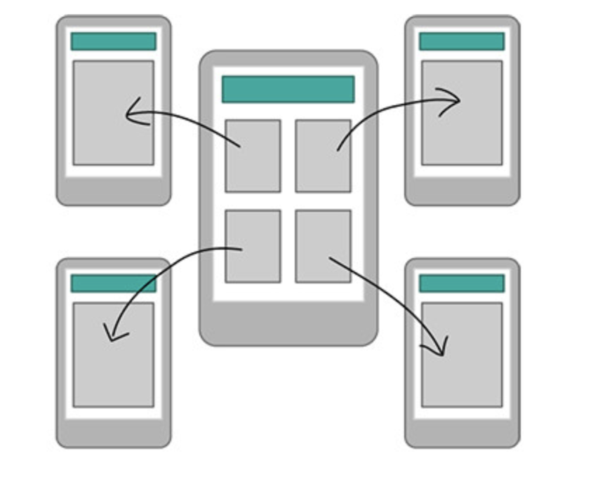<br></div>

<ul>
<li>常见例子：iphone 的默认导航样式</li>
</ul>
<div align="center"><br>  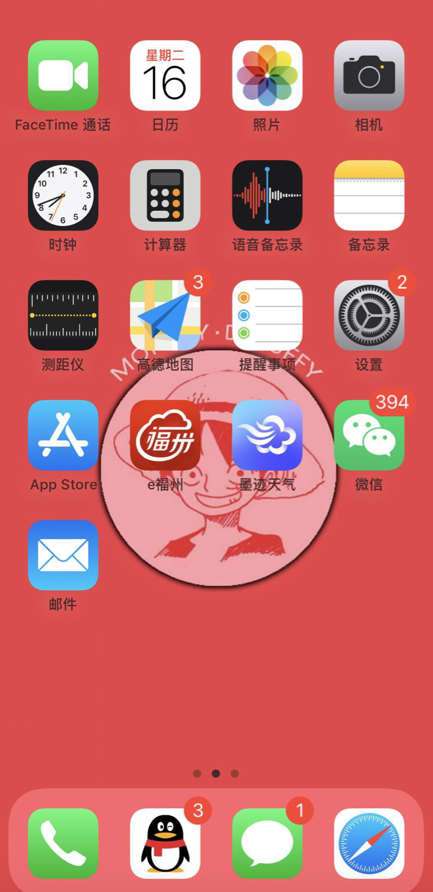<br></div>

<ul>
<li><p>适合：多功能工具，每个功能有一个独立的内部导航和目标。</p>
</li>
<li><p>注意：这种样式不适于用户进行多任务操作</p>
</li>
</ul>
<h2 id="重叠放置-套娃式（Nested-doll）"><a href="#重叠放置-套娃式（Nested-doll）" class="headerlink" title="重叠放置/套娃式（Nested doll）"></a>重叠放置/套娃式（Nested doll）</h2><ul>
<li><strong>重叠放置</strong>模式采用线性方式引导用户查到更详细的内容。当用户迷路时，这种设计能快速且方便地为用户导航。通过点击“前进”或“后退”，用户可以强烈感知自己所处何处。</li>
</ul>
<div align="center"><br>  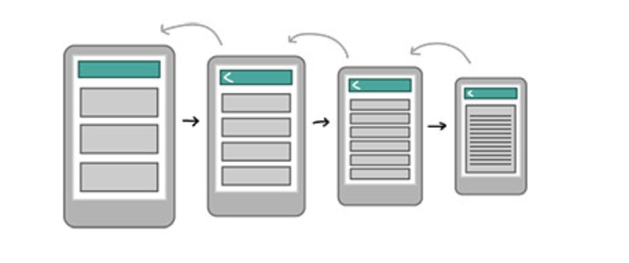<br></div>

<ul>
<li>案例：兴业银行对公开户申请流程</li>
</ul>
<div align="center"><br>  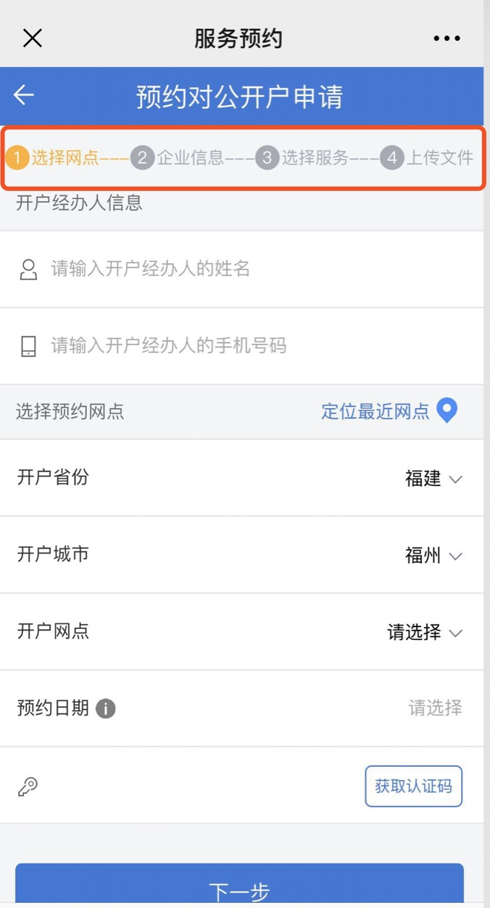<br></div>

<ul>
<li><p>适合：有着单一的，或者相关话题的 App 或者网站。</p>
</li>
<li><p>注意：用户无法在不同内容中快速切换，因此需要考虑这种样式是否方便查找，而不能让它成为查找内容的绊脚石</p>
</li>
</ul>
<h2 id="页签视图（Tabbed-view）"><a href="#页签视图（Tabbed-view）" class="headerlink" title="页签视图（Tabbed view）"></a>页签视图（Tabbed view）</h2><ul>
<li><strong>页签视图</strong>对于常规 app 的用户而言十分熟悉。它通过一个工具条菜单将一组区块组合在一起，从而允许用户在首次使用时快速浏览和了解 app 的全部功能。</li>
</ul>
<div align="center"><br>  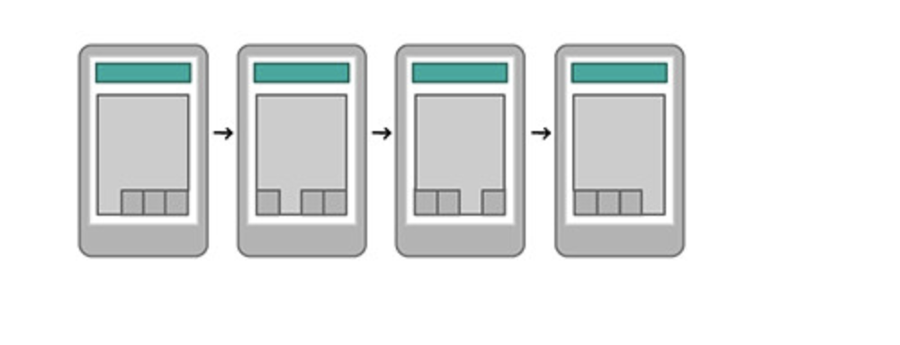<br></div>

<ul>
<li>案例：京东 APP 的分类列表</li>
</ul>
<div align="center"><br>  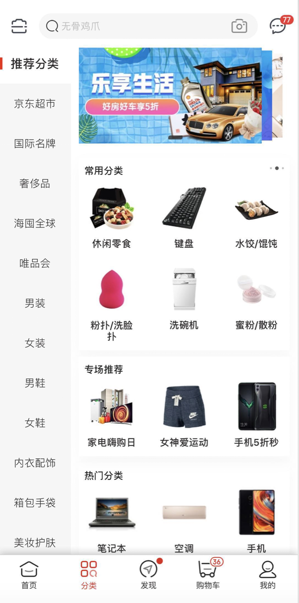<br></div>

<ul>
<li><p>适合：基于工具的 app，多任务且主题相似</p>
</li>
<li><p>注意：这种样式不太适合复杂类结构，较为适用于非常简单的内容结构。</p>
</li>
</ul>
<h2 id="便当盒-仪表盘模式（Bento-box）"><a href="#便当盒-仪表盘模式（Bento-box）" class="headerlink" title="便当盒/仪表盘模式（Bento box）"></a>便当盒/仪表盘模式（Bento box）</h2><ul>
<li><strong>便当盒</strong>通过使用组件展示相关工具或内容的部分信息，直接在首屏就能够带来更详细的内容呈现。</li>
</ul>
<div align="center"><br>  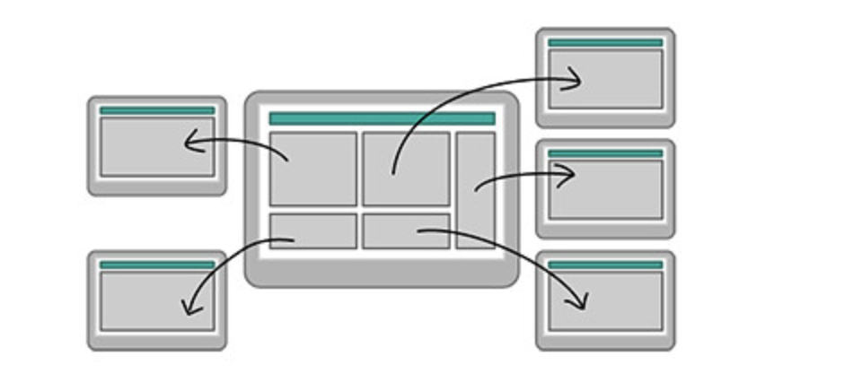<br></div>

<ul>
<li>案例：去哪儿首页</li>
</ul>
<div align="center"><br>  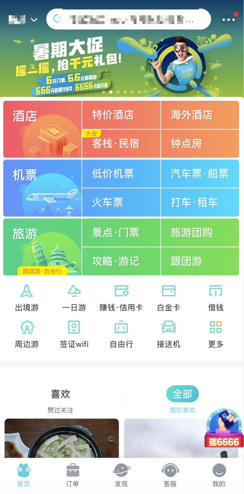<br></div>

<ul>
<li><p>适合：多功能工具，以及基于内容，具有相似主题的平板 app</p>
</li>
<li><p>注意：尽管平板电脑的屏幕提供更多空间承载这种样式，但更为重要的是我们要理解用户如何与每块内容互动，以及我们要确保应用简单、有效、使用愉悦。</p>
</li>
</ul>
<h2 id="过滤视图（Filtered-view）"><a href="#过滤视图（Filtered-view）" class="headerlink" title="过滤视图（Filtered view）"></a>过滤视图（Filtered view）</h2><ul>
<li><strong>过滤视图</strong>最终允许用户通过选择过滤条件创造不同视图，来在一系列数据之间进行导航。</li>
</ul>
<div align="center"><br>  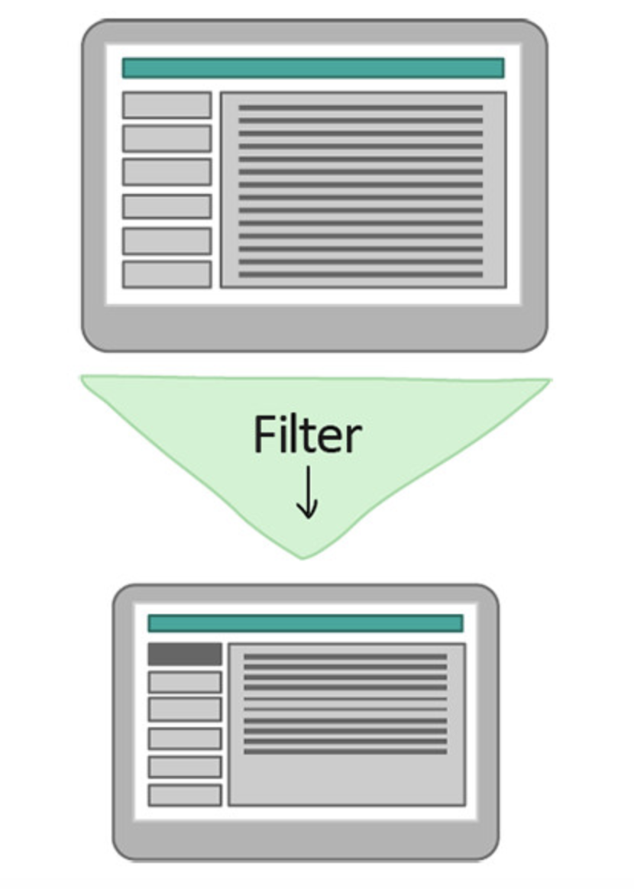<br></div>

<ul>
<li>案例：饿了么的美食筛选</li>
</ul>
<div align="center"><br>  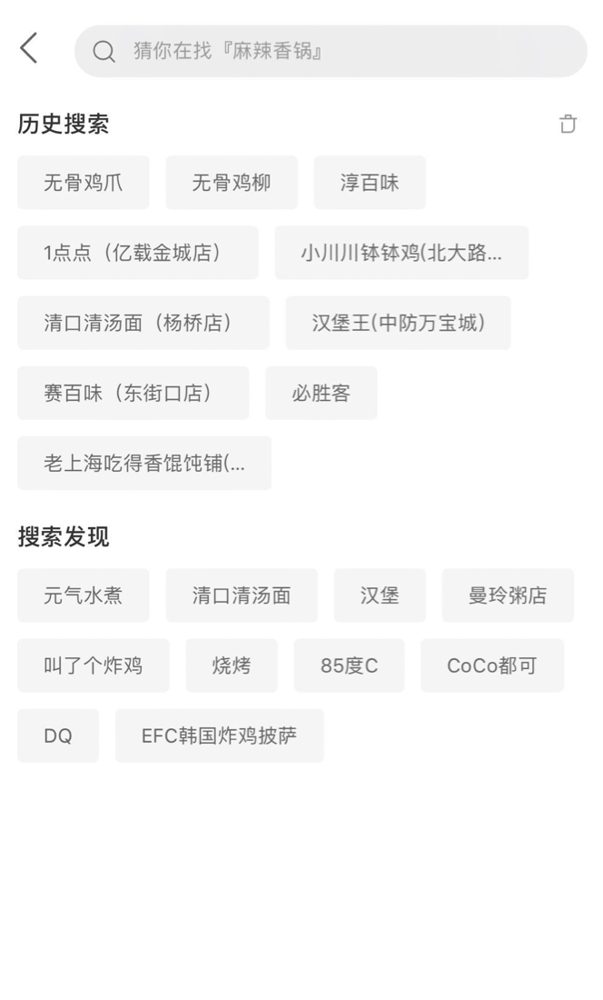<br></div>

<ul>
<li><p>适合：拥有大量内容的 App 或者网站，例如文章、图片和视频。</p>
</li>
<li><p>注意：过滤器和面搜索在小屏幕上的展示会很困难。</p>
</li>
</ul>

      
    </div>
    <footer class="article-footer">
      
        <div id="donation_div"></div>

<script src="/js/vdonate.js"></script>
<script>
var a = new Donate({
  title: '如果觉得我的文章对您有用，请随意打赏。您的支持将鼓励我继续创作!', // 可选参数，打赏标题
  btnText: '打赏支持', // 可选参数，打赏按钮文字
  el: document.getElementById('donation_div'),
  wechatImage: '../images/wx.jpeg',
  alipayImage: '../images/zfb.jpg'
});
</script>
      
      
      <div>
        <ul class="post-copyright">
          <li class="post-copyright-author">
          <strong>本文作者:  </strong>guowj
          </li>
          <li class="post-copyright-link">
          <strong>本文链接:  </strong>
          <a href="/常用的移动信息架构设计模式/" target="_blank" title="常用的移动信息架构设计模式">https://gwjacqueline.github.io/常用的移动信息架构设计模式/</a>
          </li>
          <li class="post-copyright-license">
            <strong>版权声明:   </strong>
            本博客所有文章除特别声明外，均采用 <a rel="license" href="https://creativecommons.org/licenses/by-nc-nd/4.0/" target="_blank" title="Attribution-NonCommercial-NoDerivatives 4.0 International (CC BY-NC-ND 4.0)">CC BY-NC-ND 4.0</a>
            许可协议。转载请注明出处
          </li>
         
        </ul>
<div>
</div></div>
      
      
        
	<div id="comment">
		<!-- 来必力City版安装代码 -->
		<div id="lv-container" data-id="city" data-uid="MTAyMC80MzU1OS8yMDA5OA==" ">
		<script type="text/javascript">
		   (function(d, s) {
		       var j, e = d.getElementsByTagName(s)[0];

		       if (typeof LivereTower === 'function') { return; }

		       j = d.createElement(s);
		       j.src = 'https://cdn-city.livere.com/js/embed.dist.js';
		       j.async = true;

		       e.parentNode.insertBefore(j, e);
		   })(document, 'script');
		</script>
		<noscript>为正常使用来必力评论功能请激活JavaScript</noscript>
		</div>
		<!-- City版安装代码已完成 -->
	</div>


      
      
        
  <ul class="article-tag-list"><li class="article-tag-list-item"><a class="article-tag-list-link" href="/tags/交互设计/">交互设计</a></li><li class="article-tag-list-item"><a class="article-tag-list-link" href="/tags/产品/">产品</a></li><li class="article-tag-list-item"><a class="article-tag-list-link" href="/tags/信息架构/">信息架构</a></li><li class="article-tag-list-item"><a class="article-tag-list-link" href="/tags/移动端/">移动端</a></li></ul>

      

    </footer>
  </div>
  
    
<nav id="article-nav">
  
    <a href="/移动端主导航的设计模式/" id="article-nav-newer" class="article-nav-link-wrap">
      <strong class="article-nav-caption">上一篇</strong>
      <div class="article-nav-title">
        
          移动端主导航的设计模式
        
      </div>
    </a>
  
  
    <a href="/尼尔森十大原则/" id="article-nav-older" class="article-nav-link-wrap">
      <strong class="article-nav-caption">下一篇</strong>
      <div class="article-nav-title">尼尔森十大原则</div>
    </a>
  
</nav>

  
</article>

<!-- Table of Contents -->

  <aside id="toc-sidebar">
    <div id="toc" class="toc-article">
    <strong class="toc-title">文章目录</strong>
    
        <ol class="nav"><li class="nav-item nav-level-2"><a class="nav-link" href="#层级结构（Hierarchy）"><span class="nav-number">1.</span> <span class="nav-text">层级结构（Hierarchy）</span></a></li><li class="nav-item nav-level-2"><a class="nav-link" href="#集中和分发-辐射式（Hub-amp-spoke）"><span class="nav-number">2.</span> <span class="nav-text">集中和分发/辐射式（Hub&amp;spoke）</span></a></li><li class="nav-item nav-level-2"><a class="nav-link" href="#重叠放置-套娃式（Nested-doll）"><span class="nav-number">3.</span> <span class="nav-text">重叠放置/套娃式（Nested doll）</span></a></li><li class="nav-item nav-level-2"><a class="nav-link" href="#页签视图（Tabbed-view）"><span class="nav-number">4.</span> <span class="nav-text">页签视图（Tabbed view）</span></a></li><li class="nav-item nav-level-2"><a class="nav-link" href="#便当盒-仪表盘模式（Bento-box）"><span class="nav-number">5.</span> <span class="nav-text">便当盒/仪表盘模式（Bento box）</span></a></li><li class="nav-item nav-level-2"><a class="nav-link" href="#过滤视图（Filtered-view）"><span class="nav-number">6.</span> <span class="nav-text">过滤视图（Filtered view）</span></a></li></ol>
    
    </div>
  </aside>

</section>
        
      </div>
      
      <footer id="footer">
  

  <div class="container">
      	<div class="row">
	      <!--<p> Powered by <a href="http://hexo.io/" target="_blank">Hexo</a> and <a href="https://github.com/iTimeTraveler/hexo-theme-hiker" target="_blank">Hexo-theme-hiker</a> </p>-->
	      <p id="copyRightEn">Copyright &copy;2019 guowj All Rights Reserved.</p>
	      
	      
    		<p class="busuanzi_uv">
				访客数 : <span id="busuanzi_value_site_uv"></span> |  
				访问量 : <span id="busuanzi_value_site_pv"></span>
		    </p>
  		   
		</div>

		
  </div>
</footer>


<!-- min height -->

<script>
    var wrapdiv = document.getElementById("wrap");
    var contentdiv = document.getElementById("content");
    var allheader = document.getElementById("allheader");

    wrapdiv.style.minHeight = document.body.offsetHeight + "px";
    if (allheader != null) {
      contentdiv.style.minHeight = document.body.offsetHeight - allheader.offsetHeight - document.getElementById("footer").offsetHeight + "px";
    } else {
      contentdiv.style.minHeight = document.body.offsetHeight - document.getElementById("footer").offsetHeight + "px";
    }
</script>
    </div>
    <!-- <nav id="mobile-nav">
  
    <a href="/" class="mobile-nav-link">Home</a>
  
    <a href="/archives" class="mobile-nav-link">Archives</a>
  
    <a href="/categories" class="mobile-nav-link">Categories</a>
  
    <a href="/tags" class="mobile-nav-link">Tags</a>
  
</nav> -->
    

<!-- mathjax config similar to math.stackexchange -->

<script type="text/x-mathjax-config">
  MathJax.Hub.Config({
    tex2jax: {
      inlineMath: [ ['$','$'], ["\\(","\\)"] ],
      processEscapes: true
    }
  });
</script>

<script type="text/x-mathjax-config">
    MathJax.Hub.Config({
      tex2jax: {
        skipTags: ['script', 'noscript', 'style', 'textarea', 'pre', 'code']
      }
    });
</script>

<script type="text/x-mathjax-config">
    MathJax.Hub.Queue(function() {
        var all = MathJax.Hub.getAllJax(), i;
        for(i=0; i < all.length; i += 1) {
            all[i].SourceElement().parentNode.className += ' has-jax';
        }
    });
</script>

<script type="text/javascript" src="https://cdnjs.cloudflare.com/ajax/libs/mathjax/2.7.1/MathJax.js?config=TeX-AMS-MML_HTMLorMML">
</script>


  <link rel="stylesheet" href="/fancybox/jquery.fancybox.css">
  <script src="/fancybox/jquery.fancybox.pack.js"></script>


<script src="/js/scripts.js"></script>


  <script src="/js/dialog.js"></script>


	<div style="display: none;">
    <script src="https://s95.cnzz.com/z_stat.php?id=1260716016&web_id=1260716016" language="JavaScript"></script>
  </div>


	<script async src="//busuanzi.ibruce.info/busuanzi/2.3/busuanzi.pure.mini.js">
	</script>


  </div>

  <div class="modal fade" id="myModal" tabindex="-1" role="dialog" aria-labelledby="myModalLabel" aria-hidden="true" style="display: none;">
  <div class="modal-dialog">
    <div class="modal-content">
      <div class="modal-header">
        <h2 class="modal-title" id="myModalLabel">设置</h2>
      </div>
      <hr style="margin-top:0px; margin-bottom:0px; width:80%; border-top: 3px solid #000;">
      <hr style="margin-top:2px; margin-bottom:0px; width:80%; border-top: 1px solid #000;">


      <div class="modal-body">
          <div style="margin:6px;">
            <a data-toggle="collapse" data-parent="#accordion" href="#collapseOne" onclick="javascript:setFontSize();" aria-expanded="true" aria-controls="collapseOne">
              正文字号大小
            </a>
          </div>
          <div id="collapseOne" class="panel-collapse collapse" role="tabpanel" aria-labelledby="headingOne">
          <div class="panel-body">
            您已调整页面字体大小
          </div>
        </div>
      


          <div style="margin:6px;">
            <a data-toggle="collapse" data-parent="#accordion" href="#collapseTwo" onclick="javascript:setBackground();" aria-expanded="true" aria-controls="collapseTwo">
              夜间护眼模式
            </a>
        </div>
          <div id="collapseTwo" class="panel-collapse collapse" role="tabpanel" aria-labelledby="headingTwo">
          <div class="panel-body">
            夜间模式已经开启，再次单击按钮即可关闭 
          </div>
        </div>

        <div>
            <a data-toggle="collapse" data-parent="#accordion" href="#collapseThree" aria-expanded="true" aria-controls="collapseThree">&nbsp;&nbsp;&nbsp;&nbsp;&nbsp;&nbsp;关 于&nbsp;&nbsp;&nbsp;&nbsp;&nbsp;&nbsp;</a>
        </div>
         <div id="collapseThree" class="panel-collapse collapse" role="tabpanel" aria-labelledby="headingThree">
          <div class="panel-body">
            guowj
          </div>
          <div class="panel-body">
            Copyright © 2019 guowj All Rights Reserved.
          </div>
        </div>
      </div>


      <hr style="margin-top:0px; margin-bottom:0px; width:80%; border-top: 1px solid #000;">
      <hr style="margin-top:2px; margin-bottom:0px; width:80%; border-top: 3px solid #000;">
      <div class="modal-footer">
        <button type="button" class="close" data-dismiss="modal" aria-label="Close"><span aria-hidden="true">×</span></button>
      </div>
    </div>
  </div>
</div>
  
  <a id="rocket" href="#top" class=""></a>
  <script type="text/javascript" src="/js/totop.js?v=1.0.0" async=""></script>
  
    <a id="menu-switch"><i class="fa fa-bars fa-lg"></i></a>
  
</body>
</html>